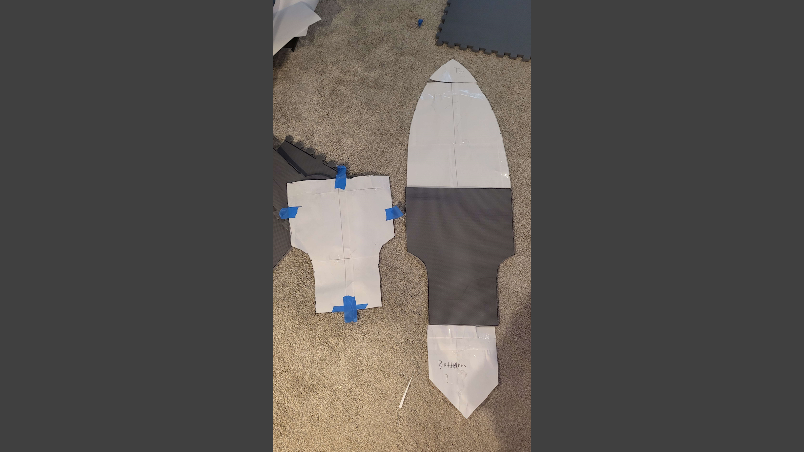
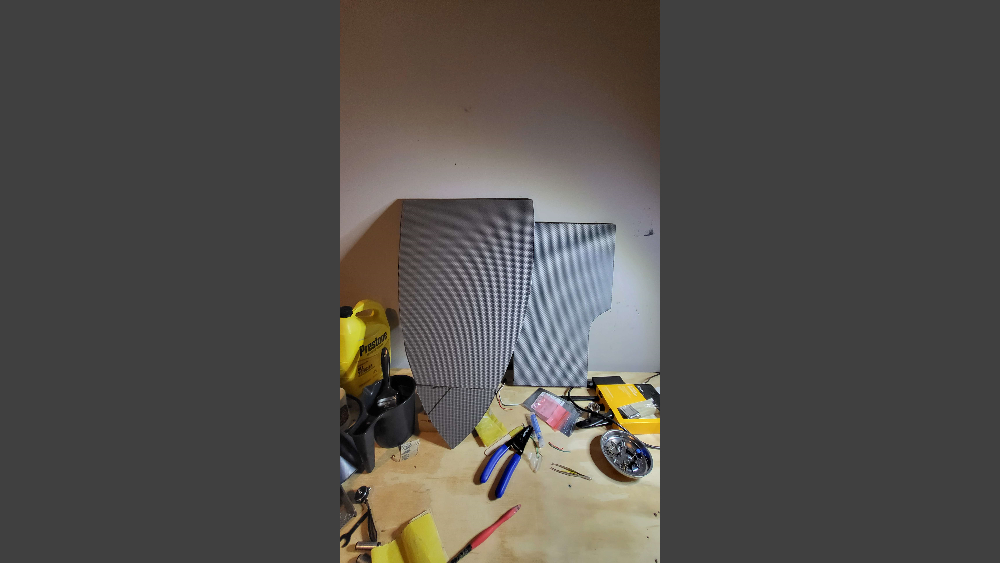
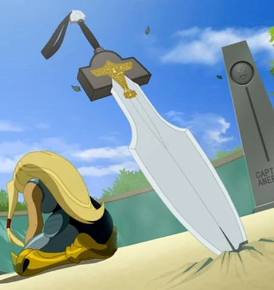
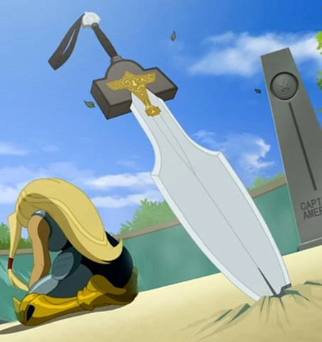
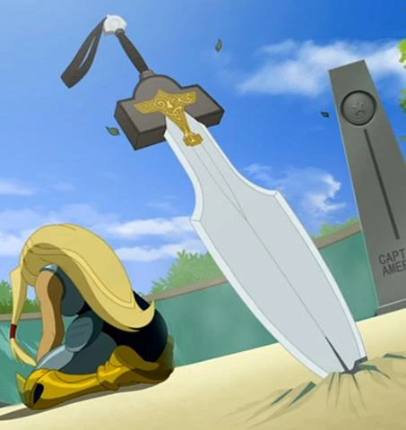

This is the sword used by Thor's daughter, Torunn. It works pretty much the same as Mjölnir, i.e., it allows Torunn to channel her thunder powers through it.
It can also be called to Torunn much like Mjölnir and can be spun to give the user flight.
I am going to be making this sword almost completely out of EVA floor mat foam. The spine of it will be made of an old broom handle
while the hilt will be made of foam, exactly like the material I used for my original Mjölnir build. For the paint job I am going to try somhting new. I am
going to coat the blade with graphite powder which from what I've seen online, gives a really nice metallic finish.


 

